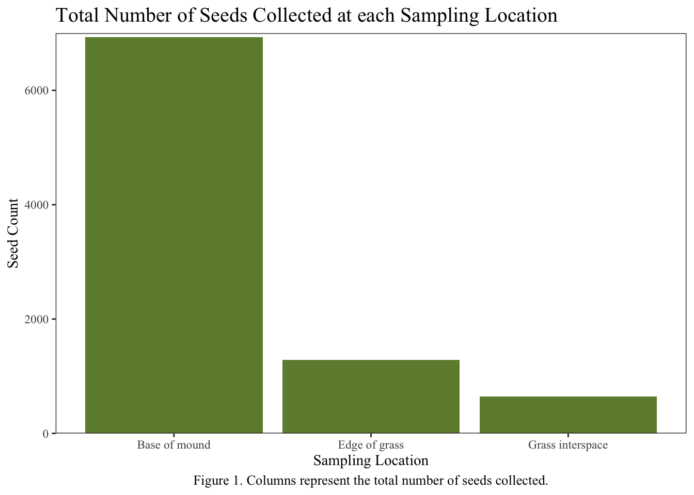
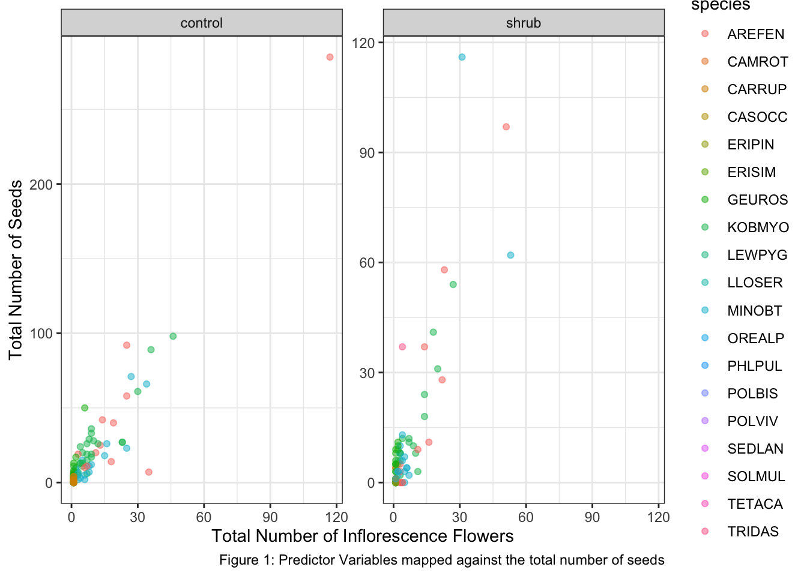

Code
library(MASS)
library(tidyverse)
library(here)
library(janitor)
library(readxl)
library(naniar)
library(car)
library(flextable)#load libraries:
library(MASS)
library(tidyverse)
library(here)
library(janitor)
library(readxl)
library(naniar)
library(car)
library(flextable)Small scale biotic disturbances can influence species compositions in plant communities (Bullock, 2000). In the Chihuahuan desert, kangaroo rat mounds can be classified as this type of small scale disturbance (Koontz and Simpson, 2010). Previous studies comparing landscapes containing kangaroo rat mounds have found that annual plant cover is higher on top of mounds than in surrounding areas (Davidson and Lightfoot, 2008). Though the literature outlines difference between vegetation composition, the scientific community still lacks understanding of how kangaroo rat mounds might influence seed bank composition (Koontz and Simpson, 2010). In this analysis, we aim to investigate this potential relationship. The question we want to answer is: How does total seed number differ between kangaroo rat mound locations? Our null hypothesis is that kangaroo rat mounds do not influence seed bank composition and our alternative hypothesis is that kangaroo rat mounds do influence seed bank composition.
We read in the data available here (Koontz, T. and H. Simpson. 2013). We cleaned the data by selecting the columns we are interested in and renaming the locations (base of mound, edge of grass, grass inter-space) for more straightforward interpretation. We then added up all of the seed counts in each category since we are comparing total counts. We chose to use a Chi-squared analysis to compare the total seed counts in each category since this kind of test is useful for analyzing count data. Our data meets each of the assumptions required to run a Chi-squared test. Our data represents counts and the samples are independent. Individual counts can only fall in one category at a time since each count corresponds to a specific sampling site. Finally, each expected value for each cell was greater than 5. We tested the null hypothesis that sampling location does not significantly affect total seed count. The alternative hypothesis is that sampling location does influence total counts.
Read in data:
seed_dat <- read_csv(here("data/sev208_kratseedbank_20120213.csv"))Clean data:
#create new data frame with kangaroo rat mound locations and seed numbers found
seed_dat_clean <- seed_dat |>
#select columns of interest
select(loc, seeds) |>
#remove "D" from loc column becuase there is no data defintion on the EDI portal
filter(loc != "D") |>
#rename columns
mutate(loc = case_when(loc == "B" ~ "Base of mound",
loc == "E" ~ "Edge of grass",
loc == "I" ~ "Grass interspace")) |>
group_by(loc) |>
summarize(count = sum(seeds)) |>
ungroup() |>
column_to_rownames("loc")
#check for missing data
gg_miss_var(seed_dat_clean) #no missing data 
#check how many sampling events for each location
seed_dat_n <- seed_dat |>
select(loc, seeds) |>
mutate(loc = case_when(loc == "B" ~ "Base of mound",
loc == "E" ~ "Edge of grass",
loc == "I" ~ "Grass interspace")) |>
group_by(loc) |>
count(loc)Run Chi-square Test:
seed_test <- chisq.test(seed_dat_clean)
seed_test
Chi-squared test for given probabilities
data: seed_dat_clean
X-squared = 8106, df = 2, p-value < 2.2e-16Visualization:
#reorganize seed_dat_clean so location is column name
#rename columns
seed_viz_dat <- seed_dat_clean |>
rownames_to_column("loc")
#create bar graph to compare total seed counts at each location
seed_viz <- ggplot(data = seed_viz_dat, aes(x = loc , y = count)) +
geom_col(fill = "darkolivegreen4") +
labs(x = "Sampling Location",
y = "Seed Count",
title = "Total Number of Seeds Collected at each Sampling Location",
caption = "Figure 1. Columns represent the total number of seeds collected.") +
theme_bw() +
#get rid of gap between bars and x axis
scale_y_continuous(limits = c(0, 7000), expand = c(0, 0)) +
#make plot look prettier
theme(text = element_text(family = "Times New Roman"),
#change size and location of plot caption
plot.caption = element_text(size = 10, hjust = 0.5),
#change size of plot title
plot.title = element_text(size = 15),
# getting rid of gridlines
panel.grid = element_blank())
#get rid of gap between bars and x axis)
seed_viz
Table 1: Total seed count data by sampling location Numbers in parentheses indicate the proportion of responses (the 6932 total seeds found at the base of kangaroo rat mounds make up 78 percent of the total seeds found at all locations, n = 1170).
# calculate proportions
seed_summary <- seed_dat_clean %>%
#make location column from rownames
rownames_to_column("Location") %>%
#find total number of seeds from all locations sampled and make new column
mutate(sum = sum(count)) %>%
#ungroup to make sure that distance groups don't mess up downstream functions
ungroup() %>%
#calculate proportion of responses per living distance
mutate(prop = count/sum) %>%
#make a new column where counts and proportions are displayed together
mutate(text = paste0(count, " (", round(prop, digits = 2), ")")) %>%
#select columns of interest
select(Location, text) %>%
#making the data frame wider so that the columns are responses and rows are distance
pivot_wider(names_from = "Location", values_from = "text") %>%
#turning everything into a table ----
flextable() %>%
#changing the column names to look nicer
set_header_labels(distance = "Living distance",
trails = "Trails",
dog_access = "Dog access",
wildlife_habitat = "Wildlife habitat") %>%
#making the table fit the viewer window
autofit()
seed_summaryBase of mound | Edge of grass | Grass interspace |
|---|---|---|
6932 (0.78) | 1282 (0.14) | 647 (0.07) |
Considering count data taken from the base of kangaroo rat mounds (n = 390), at the edge of grass mounds Bouteloua eripoda (n = 390), and in the inter-space between Bouteloua eripoda grass mounds (n = 390), total seed counts differ significantly by sampling location (Table 1. X-squared = 8106 (2), p = < 2.2e-16, alpha = 0.05). We found that a large majority of seeds were collected at the base of the kangaroo rat mounds (78 percent), while significantly fewer seeds were found at locations beyond the kangaroo rat mounds (14 percent & 7 percent). This result indicates that there are more seeds in the seed bank at the kangaroo rat mounds than in the seed bank below nearby Bouteloua eripoda grasses. We can reject the null hypothesis that sampling location has no effect on total seed count and conclude that kangaroo rat mounds have an effect on seed bank composition at this study site.
Bullock, J. M. (2000) ‘Gaps and seedling colonization.’, CABI Books. CABI International. doi: 10.1079/9780851994321.0375.
Davidson, & Lightfoot, D. C. (2008). Burrowing rodents increase landscape heterogeneity in a desert grassland. Journal of Arid Environments, 72(7), 1133–1145. https://doi.org/10.1016/j.jaridenv.2007.12.015
Koontz, T. and H. Simpson. 2013. Effects of Kangaroo Rat Mounds on Seed Banks of Grass and Shrublands at the Sevilleta National Wildlife Refuge, New Mexico (2001) ver 102459. Environmental Data Initiative.
Koontz and Simpson 2010, “The composition of seed banks on kangaroo rat (Dipodomysspectabilis) mounds in a Chihuahuan Desert grassland.” Journal of Arid Environments. https://doi.org/10.1016/j.jaridenv.2010.03.008
Introduction:
load libraries
library(lme4)
# library(glmmTB) #not available
library(DHARMa)
library(ggeffects)
library(lmtest)
library(broom)
library(MuMIn)Seed count can vary with plot type(shrub or open), plant species, or total number of inflorescence. Due to climate-change induced alterations, conditions in the alpine tundra have led to the expansion of woody shrubs known as “shrubification”.Shrubs are known to rapidly encroach on herbaceous plant communities in the tundra all over the world (Smith, 2011). Additionally, seed count varies with plant species and the total number of inflorescence. The “vigour” of seeds describes the sum total of their properties that establish seedlings to adapt based on a wide variety of factors (Mitchell, 2017) Knowing the variability within seeds across scales can help plants to adapt to climate change and elevated CO2, along with providing a path for enhancing crops (Mitchell, 2016).
We cleaned the data by cleaning up the column names, but kept all the columns so as to help with the ggplot later on. We then created a graph with the missing variables, and chose to use a generalized linear model as our source of comparing the predictor variables to the total number of seeds. We then created multiple models to compare the seed count to the plot type, plant species, and total number of inflorescences. We determined which model to use by comparing AICc values, and visualized the data through a ggplot.
Read in data:
seedcount <-read_csv(here("data/knb-lter-nwt.297.1/seedcount.csv")) |> #reading in data
clean_names() #adjusting column names to lowercase Visualizing missing data:
gg_miss_var(seedcount)
Building models
#linear model, this is wrong
seedcount1 <- lm(nr_seeds ~ total_nr_infl + species + treatment, data = seedcount)
# general linear model with Poisson distribution
seedcount2 <- glm(nr_seeds ~ total_nr_infl + species + treatment, data = seedcount, family = "poisson")
seedcoun2.a <- glm(nr_seeds ~ total_nr_infl + species + treatment, data = seedcount, family = "poisson")
# general linear model with negative binomial distribution
seedcount3 <- glm.nb(nr_seeds ~ total_nr_infl + species + treatment, data = seedcount)
#seedcount3.a <- glmmTB(nr_seeds ~ total_nr_infl + plant_nr + tag_num, data = seedcount, family = "nbinom2") don't have packages
#generalized linear model with Poisson distribution and random effect of site
seedcount4 <- glmer(nr_seeds ~ total_nr_infl + species + treatment + (1|shrub_num), data = seedcount, family = "poisson")
#generalized linear model with negative binomial distribution and random effect of site
seedcount5 <- glmer.nb(nr_seeds ~ total_nr_infl + species + treatment + (1|shrub_num), data = seedcount)Selecting the distribution to use
MuMIn::model.sel(seedcount1, seedcount2, seedcount3, seedcount4, seedcount5)Model selection table
(Int) spc ttl_nr_inf trt family class init.theta link
seedcount3 1.918 + 0.07499 + NB(1.5049,l) negbin 1.5 log
seedcount5 1.909 + 0.07498 + NB(1.5549,l) glmerMod
seedcount1 -2.567 + 2.15000 + g(i) lm
seedcount4 2.488 + 0.03145 + p(l) glmerMod
seedcount2 2.549 + 0.02989 + p(l) glm
random df logLik AICc delta weight
seedcount3 9 -556.455 1132.0 0.00 0.717
seedcount5 s_n 10 -556.265 1133.8 1.86 0.283
seedcount1 9 -692.468 1404.0 272.03 0.000
seedcount4 s_n 9 -1058.768 2136.6 1004.62 0.000
seedcount2 8 -1150.107 2317.0 1185.09 0.000
Abbreviations:
family: g(i) = 'gaussian(identity)',
NB(1.5049,l) = 'Negative Binomial(1.5049,log)',
NB(1.5549,l) = 'Negative Binomial(1.5549,log)', p(l) = 'poisson(log)'
Models ranked by AICc(x)
Random terms:
s_n: 1 | shrub_numModel Summary
seedcount2 #calling seedcount2
Call: glm(formula = nr_seeds ~ total_nr_infl + species + treatment,
family = "poisson", data = seedcount)
Coefficients:
(Intercept) total_nr_infl speciesCARRUP speciesGEUROS speciesKOBMYO
2.54931 0.02989 -2.19646 -0.75914 0.15451
speciesMINOBT speciesTRIDAS treatmentshrub
-0.14548 1.11376 -0.17174
Degrees of Freedom: 181 Total (i.e. Null); 174 Residual
(105 observations deleted due to missingness)
Null Deviance: 5094
Residual Deviance: 1706 AIC: 2316summary(seedcount2) #creating a summary of the model
Call:
glm(formula = nr_seeds ~ total_nr_infl + species + treatment,
family = "poisson", data = seedcount)
Coefficients:
Estimate Std. Error z value Pr(>|z|)
(Intercept) 2.5493104 0.0592232 43.046 < 2e-16 ***
total_nr_infl 0.0298950 0.0006654 44.927 < 2e-16 ***
speciesCARRUP -2.1964550 0.1563725 -14.046 < 2e-16 ***
speciesGEUROS -0.7591403 0.0858719 -8.840 < 2e-16 ***
speciesKOBMYO 0.1545097 0.0586618 2.634 0.008441 **
speciesMINOBT -0.1454826 0.0648019 -2.245 0.024766 *
speciesTRIDAS 1.1137639 0.1740224 6.400 1.55e-10 ***
treatmentshrub -0.1717363 0.0442661 -3.880 0.000105 ***
---
Signif. codes: 0 '***' 0.001 '**' 0.01 '*' 0.05 '.' 0.1 ' ' 1
(Dispersion parameter for poisson family taken to be 1)
Null deviance: 5093.8 on 181 degrees of freedom
Residual deviance: 1705.8 on 174 degrees of freedom
(105 observations deleted due to missingness)
AIC: 2316.2
Number of Fisher Scoring iterations: 5confint(seedcount2) #creating a confindence interval 2.5 % 97.5 %
(Intercept) 2.43185792 2.66403780
total_nr_infl 0.02859107 0.03120006
speciesCARRUP -2.51534399 -1.90098452
speciesGEUROS -0.92867474 -0.59188383
speciesKOBMYO 0.04016848 0.27016638
speciesMINOBT -0.27240215 -0.01831202
speciesTRIDAS 0.75637192 1.44048917
treatmentshrub -0.25881162 -0.08526487r.squaredGLMM(seedcount2) R2m R2c
delta 0.9388307 0.9388307
lognormal 0.9407220 0.9407220
trigamma 0.9368163 0.9368163Table 1: Test statistics for predictor variables against total seed numbers. This table holds all the relevant information for the statistics of the predictor variables. The P-values are all less than .001, showing that the data is statistically significant, with the estimate, standard error, and statistic of each predictor variable are also shown.
model_squares_table <- tidy(seedcount2) %>% #creating a flextable
mutate(p.value = case_when(
p.value < 0.001 ~ "< 0.001" #creating labels for the p-values
)) %>%
flextable() %>%
set_header_labels(statistic = "Statistic", #adjusting the titles of the columns
p.value = "P-Value",
std.error = "Standard Error",
estimate = "Estimate",
term = "Term")
model_squares_tableTerm | Estimate | Standard Error | Statistic | P-Value |
|---|---|---|---|---|
(Intercept) | 2.54931038 | 0.0592231577 | 43.045837 | < 0.001 |
total_nr_infl | 0.02989499 | 0.0006654156 | 44.926796 | < 0.001 |
speciesCARRUP | -2.19645502 | 0.1563725046 | -14.046299 | < 0.001 |
speciesGEUROS | -0.75914034 | 0.0858718650 | -8.840385 | < 0.001 |
speciesKOBMYO | 0.15450967 | 0.0586618395 | 2.633904 | |
speciesMINOBT | -0.14548262 | 0.0648018742 | -2.245037 | |
speciesTRIDAS | 1.11376389 | 0.1740224299 | 6.400117 | < 0.001 |
treatmentshrub | -0.17173633 | 0.0442660504 | -3.879640 | < 0.001 |
Visualizing:
predictions <- ggpredict(seedcount2, terms = c("total_nr_infl", "species", "treatment")) #creating predictors variable
ggplot(seedcount, aes(x = total_nr_infl, y = nr_seeds)) + #putting total flowers as x-value, and total number of seeds as y
geom_point(aes(color = species), alpha = 0.5) + #creating the species as points
facet_wrap(~treatment, scales = "free_y") + #adding the two types of shrubs
labs(caption = "Figure 1: Predictor Variables mapped against the total number of seeds",
y = "Total Number of Seeds",
x = "Total Number of Inflorescence Flowers") + #adding captions
theme_bw() #adjusting theme
After creating a Poisson regression with three predictor variables: plant species, open and closed shrub, and total number of inflorescence species, it was determined that the total number of inflorescence species has a significant impact on seed count (z-value = 44.927, and p-value < 0.001), with an estimated coefficient of 0.030 (degrees of freedom = 181). The different species of plants (Carrup, Geuros, Minobt, Tridas) were all shown to have a significant effect on seed count (with all the p-values either being less than .001). Additionally, the treatment predictor variable was also shown to be statistically significant with an estimated coefficient of -0.172, and a p-value of less than .001. Thus, we can reject the null hypothesis that seed count does not have an effect on plant species, open and closed shrubs, and the total number of inflorescence species.
Jack Mitchell and others, Variability in seeds: biological, ecological, and agricultural implications, Journal of Experimental Botany, Volume 68, Issue 4, 1 February 2017, Pages 809–817, https://doi.org/10.1093/jxb/erw397
Isla H Myers-Smith et al 2011 Environ. Res. Lett. 6 045509
Mitchell J, Johnston IG, Bassel GW. Variability in seeds: biological, ecological, and agricultural implications. J Exp Bot. 2017 Feb 1;68(4):809-817. doi: 10.1093/jxb/erw397. PMID: 27784726.